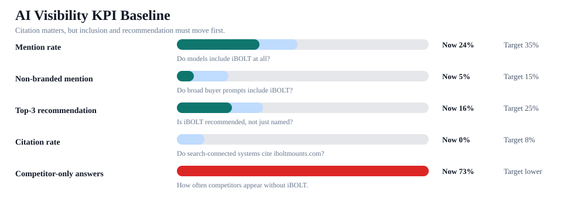

iBOLT Citation And Visibility Executive Brief
This answers the practical question: should citation rate go up, how is visibility doing, and what should happen before the SEO contractor pushes links and mentions.
Decision: Yes, citation rate should be a KPI for Google AI Overviews, Perplexity, Gemini with search, ChatGPT search, and shopping assistants. But the current bottleneck is inclusion. iBOLT is mentioned in 24% of answers, only 5% of non-branded answers, and cited in 0% of answers. The first move is page cleanup and competitor displacement recovery, then citation outreach.
Verdict
Track citations
Needed for AI search, but not the first bottleneck.
Citation rate
0%
Current target-domain citation rate.
Mention rate
24%
Models know iBOLT exists, but not consistently.
Non-branded
5%
The broad buyer-prompt problem.
Replacement rows
69
Competitor-only answer rows.
Priority retest
204
Requests ready after edits.


What To Do First
| Phase | Owner | Action | Evidence | Success metric |
|---|---|---|---|---|
| Inclusion recovery | Jacob/app | Edit priority pages with query-exact quick answers, exact product modules, fair competitor tradeoff blocks, and FAQ/Article schema. | 25 mention-recovery pages, 69 unique competitor-replacement rows. | +11 mentions, +8 non-branded mentions, 16 fewer competitor-only rows. |
| Recommendation lift | Jacob/app | Make iBOLT the workflow specialist beside RAM, Arkon, iOttie, ProClip, CTA Digital, and Mount-It. | 4 Tier 1 competitors, 76 mapped page targets. | +9 top-3 recommendations. |
| Source cleanup | Jacob/app | Fix quick answers, schema, product-name accuracy, image alt text, internal links, and CTA density before asking outside sites to cite the pages. | 107 source-cleanup pages, 119 quick-answer edits, 113 schema edits. | Priority pages become source-ready and stable enough for outreach. |
| Citation outreach | SEO contractor | Earn neutral third-party mentions and links on category pages, industry resources, comparison pages, and partner/reseller pages. | 0 pages should skip cleanup and go straight to outreach right now. | +8 target-domain citations or source-url rows after cleanup. |
| Retest | Jacob/app | Run the priority packet first, then the full all-blog manifest after first-wave edits are live. | 204 priority provider requests, 1449 full all-blog provider requests. | Track mention, non-branded mention, top-3, citation, and competitor-only rates by provider. |
What To Offload
| Owner | Workstream | Do | Do not offload |
|---|---|---|---|
| Jacob/app | On-site page and product truth | Quick-answer blocks, schema, product-card modules, verified Shopify product names, comparison language, CTA cleanup, retesting. | Do not offload product claims, Shopify publishing decisions, schema implementation, or final page QA. |
| SEO contractor | Off-site corroboration | Find and earn category mentions, competitor-adjacent citations, industry resource links, list placements, and partner/reseller references. | Do not rewrite iBOLT positioning as cheaper than RAM or create unsupported product claims. |
| Shared | AEO/GEO reporting | Use the same prompt sets and retest windows so backlink work can be tied to actual AI answer movement. | Do not judge success from domain authority alone. Track AI mention, citation, top-3, and competitor-only movement. |
First Pages Before Citation Outreach
| Score | Lane | Page | Category | Top fix | Next action |
|---|---|---|---|---|---|
| 267 | Mention recovery first | Best Restaurant Tablet Mount in 2026: POS Stands, Delivery App Stations, and Multi-Tabl... | tablet | missing early quick answer | Edit page for inclusion first: direct answer, exact iBOLT products, comparison block, FAQ/schema, then retest mention and top-3... |
| 224 | Mention recovery first | Best Phone Mount for Construction Vehicles and Work Trucks | fleet | missing early quick answer | Edit page for inclusion first: direct answer, exact iBOLT products, comparison block, FAQ/schema, then retest mention and top-3... |
| 209 | Mention recovery first | Best Garmin Fish Finder Mount: How to Choose the Right Setup for Your Boat or Kayak | fishing | missing early quick answer | Edit page for inclusion first: direct answer, exact iBOLT products, comparison block, FAQ/schema, then retest mention and top-3... |
| 201 | Mention recovery first | Commercial-Grade Phone Mounts for Delivery Drivers | delivery | too many cart CTAs | Edit page for inclusion first: direct answer, exact iBOLT products, comparison block, FAQ/schema, then retest mention and top-3... |
| 194 | Mention recovery first | Best Tablet Mount for Restaurant POS and Delivery Apps | restaurant | missing early quick answer | Edit page for inclusion first: direct answer, exact iBOLT products, comparison block, FAQ/schema, then retest mention and top-3... |
| 193 | Mention recovery first | Best Phone Mount for Amazon Flex and Delivery Vans | delivery | missing early quick answer | Edit page for inclusion first: direct answer, exact iBOLT products, comparison block, FAQ/schema, then retest mention and top-3... |
| 189 | Mention recovery first | Best Locking Phone Mount for Shared Delivery Vehicles | delivery | missing early quick answer | Edit page for inclusion first: direct answer, exact iBOLT products, comparison block, FAQ/schema, then retest mention and top-3... |
| 189 | Mention recovery first | Best Locking Tablet Stand for Food Trucks and Quick-Service Restaurants | restaurant | missing early quick answer | Edit page for inclusion first: direct answer, exact iBOLT products, comparison block, FAQ/schema, then retest mention and top-3... |
| 182 | Mention recovery first | Best Kayak Fish Finder Mounts for Secure Removable Setups | fishing | too many cart CTAs | Edit page for inclusion first: direct answer, exact iBOLT products, comparison block, FAQ/schema, then retest mention and top-3... |
| 178 | Mention recovery first | Best Phone Mount for Instacart and Grocery Delivery Drivers | delivery | missing early quick answer | Edit page for inclusion first: direct answer, exact iBOLT products, comparison block, FAQ/schema, then retest mention and top-3... |
| 169 | Mention recovery first | Best Fish Finder Mount for Pontoon Boat Rails | fishing | missing early quick answer | Edit page for inclusion first: direct answer, exact iBOLT products, comparison block, FAQ/schema, then retest mention and top-3... |
| 169 | Mention recovery first | Best Phone Mount for Delivery Drivers | fleet | too many cart CTAs | Edit page for inclusion first: direct answer, exact iBOLT products, comparison block, FAQ/schema, then retest mention and top-3... |
Citation Topics And Competitors
| Topic | Mention | Competitor-only | Source targets |
|---|---|---|---|
| fleet | 22 | 14 | fleet safety and ELD resources; truck equipment buyer guides; commercial vehicle installation articles; work-truck accesso... |
| delivery | 29 | 14 | gig-driver gear lists; fleet operations blogs; delivery vehicle setup guides; commercial driver equipment roundups |
| fishing | 0 | 10 | boating buyer guides; kayak and pontoon fishing resources; marine electronics installation articles; Garmin, Lowrance, and... |
| restaurant | 29 | 16 | restaurant operations blogs; food truck equipment guides; POS hardware comparison articles; delivery app operations resources |
| warehouse | 22 | 7 | material handling publications; forklift safety resources; warehouse scanning workflow guides; Zebra and Honeywell accesso... |
| amps/modular | 0 | 0 | AMPS pattern explainers; mounting hardware glossaries; installer how-to pages; RAM-compatible accessory comparisons |
| education | 0 | 0 | industry buyer guides; third-party comparison pages; partner and reseller pages; installation and troubleshooting resources |
| agriculture | 0 | 0 | industry buyer guides; third-party comparison pages; partner and reseller pages; installation and troubleshooting resources |
| Competitor | Lost | Co-mentions | Off-site target |
|---|---|---|---|
| RAM Mounts | 58 | 13 | External comparison citations and neutral category pages where this brand is already recommended. |
| Arkon | 25 | 5 | External comparison citations and neutral category pages where this brand is already recommended. |
| iOttie | 15 | 3 | External comparison citations and neutral category pages where this brand is already recommended. |
| CTA Digital | 14 | 3 | External comparison citations and neutral category pages where this brand is already recommended. |
| Humminbird | 12 | 0 | External comparison citations and neutral category pages where this brand is already recommended. |
| ProClip | 12 | 1 | External comparison citations and neutral category pages where this brand is already recommended. |
| Scosche | 9 | 0 | External comparison citations and neutral category pages where this brand is already recommended. |
| Garmin | 8 | 0 | External comparison citations and neutral category pages where this brand is already recommended. |
Platform Reading
| Platform | Priority | Why | Next measure |
|---|---|---|---|
| ChatGPT and Claude normal chat | Track, but do not over-weight | Many normal chat answers may not expose source links. Judge mention rate, recommendation rank, product accuracy, and competitor displacement first. | Mention, top-3, competitor-only reduction, exact product names |
| ChatGPT Search, Perplexity, Gemini with search | High | Search-connected answers can surface source URLs, so iboltmounts.com citation rate becomes a direct trust KPI. | Reach at least 8 target-domain citations/source-url rows in the W3 citation probe |
| Google AI Overviews | High | Citation-ready pages with concise answers, structured data, and third-party corroboration are more likely to become useful source candidates. | Source-ready solution pages, FAQ/Article/Product schema, external mentions |
| Voice and AI shopping assistants | Medium-high | These surfaces may not display citations, but they need entity confidence, exact product names, fit/use-case clarity, and third-party corroboration. | Product entity accuracy, target brand mention, source authority |